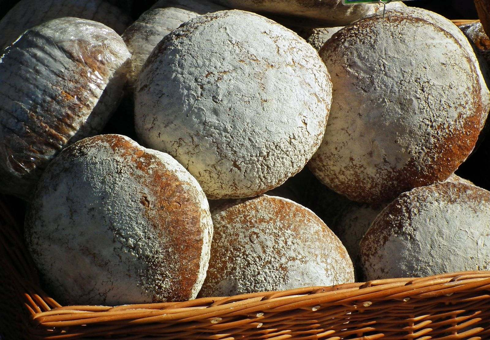

Pastries and breads
The regular lineup from the German ovens. The case changes through the week, so call if you are coming for something specific.

The regular lineup from the German ovens. The case changes through the week, so call if you are coming for something specific.
